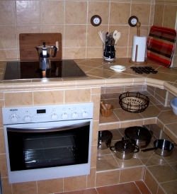

¿Dónde comer?

Cada uno de los Apartamentos contiene una cocina completa equipada con microondas, horno, vitrocerámica, cafetera, lavadora, utensilios y vajilla. Podrá comer en el salón o en el porche disfrutando de una comida al aire libre. Además hay barbacoas disponibles en las zonas comunes.
Fuentelencina tiene dos tiendas de alimentación donde comprar mientras se aloje en Los Parajes. Si quiere salir a tomar en Fuentelencina hay tres bares.
Los restaurantes de la zona ayudan a descubrir la cocina de la zona (cocina manchega, castellana y tradicional). A continuación se muestra un listado de restaurantes en la zona:
Restaurantes en Fuentelencina
| Nombre |
Restaurante Green Villague |
Restaurantes en Tendilla
| Nombre |
Restaurante los Jardines |
| Tipo |
Cocina de Caza, Cocina Española. Precio Medio: 25,00 € |
| Dirección |
Plaza de la Constitución, 11, 19134 Tendilla (Guadalajara) |
| Nombre |
El Ferial |
| Tipo |
Cocina a la brasa |
| Dirección |
Sebastián Castedo, S/N, 19134 Tendilla (Guadalajara) |
Restaurantes en el Olivar
| Nombre |
Moranchel |
| Tipo |
Cocina Casera / Precio Medio 30,00 € |
| Dirección |
Pl. Mayor, S/N, 19133 El Olivar (Guadalajara) |
| Nombre |
Nacha Restaurante |
| Tipo |
Cocina tradicional, cocina de autor, precio medio 50,00 € |
| Dirección |
La Plaza, 2, 19133 El Olivar (Guadalajara) |
Restaurantes en Pastrana
| Nombre |
Restaurante Convento San Francisco |
| Tipo |
Cocina Española |
| Dirección |
Plaza del Dean , s/n, 19100 Pastrana (Guadalajara) |
| Nombre |
Restaurante Castilla |
| Tipo |
Cocina Castellana / Precio Medio 30,00 € |
| Dirección |
Casino, 2, 19100 Pastrana (Guadalajara) |
| Nombre |
Restaurante Cesar |
| Tipo |
Cocina Castellana / Precio Medio 30,00 € |
| Dirección |
Mayor, 28, 19100 Pastrana (Guadalajara) |
| Nombre |
Hospederia Pastrana |
| Tipo |
Cocina Tradicional, Cocina Castellana, Cocina de Autor / Precio Medio 36 € |
| Dirección |
Ctra. Tarancón (CM-200), KM 1, 19100 Pastrana (Guadalajara) |
| Nombre |
El Mesón Moratin |
| Tipo |
Cocina Regional / Precio Medio 18,00 € |
| Dirección |
Moratín, 7, 19100 Pastrana (Guadalajara) |
| Nombre |
Cafe de Ruy |
| Tipo |
Cocina Tradicional / Precio Medio 25,00 € |
| Dirección |
Mayor, 1, 19100 Pastrana (Guadalajara) |
| Nombre |
Cenador de las Monjas |
| Tipo |
Cocina Regional, Cocina de Autor. Precio Medio: 35,00 € |
| Dirección |
Trav. Inés, 1, 19100 Pastrana (Guadalajara) |
| Nombre |
Restaurante Moratin |
| Tipo |
Cocina Manchega / Precio Medio 25,00 € |
| Dirección |
Moratín, 3, 19100 Pastrana (Guadalajara) |
| Nombre |
El Maño |
| Tipo |
Cocina tradicional, cocina internacional, cocina a la brasa, cocina creativa / precio medio 28,00 € |
| Dirección |
Moriscos, 13, 19100 Pastrana (Guadalajara) |
{kind=link}